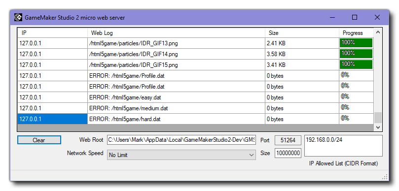
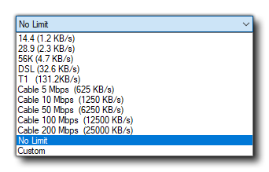

Dies ist ein kleines Werkzeug, dessen Hauptfunktion darin besteht, eine Verbindung zu einigen der verfügbaren Zielplattformen für GameMaker Studio 2 GameMaker zu GameMaker (z. B. das HTML5-Ziel). Wenn Sie ein Spiel auf einem Ziel ausführen, für das der Micro Web Server erforderlich ist, wird ein neues Fenster geöffnet, während das Spiel an das ausgewählte Gerät geliefert wird: 
Der Webserver zeigt eine bestimmte Menge an Debug-Informationen zu den bereitgestellten Dateien an und verfügt über eine Schaltfläche zum Löschen dieser Informationen am unteren Rand. Neben der Schaltfläche "Löschen" befindet sich der Pfad zur Root-JS-Datei für das Projekt, während Sie darunter die Option " Netzwerkgeschwindigkeit " haben. Diese Option ist standardmäßig auf "Keine Begrenzung" eingestellt. Wenn Sie darauf klicken, wird eine Liste mit verschiedenen Netzwerkoptionen angezeigt: 
Wenn Sie diese Einstellung ändern, wird auch die Option Paketgröße nach rechts geändert. Sie können dies auch manuell bearbeiten. In diesem Fall wird die Netzwerkgeschwindigkeit auf "Benutzerdefiniert" eingestellt. Wenn Sie den Wert auf einen anderen Wert als den Höchstwert setzen, wird die Übertragungsgeschwindigkeit des Netzwerks effektiv beeinträchtigt und Sie können Spiele in einer Umgebung mit niedriger Bandbreite testen.
Sie können auch die Liste der zulässigen IPs zusammen mit der verwendeten Portnummer anzeigen. Diese können jedoch nicht im Micro Web Server bearbeitet werden. Sie sollten stattdessen in den Einstellungen für Target Manager Devices für das angegebene Geräteziel festgelegt werden.